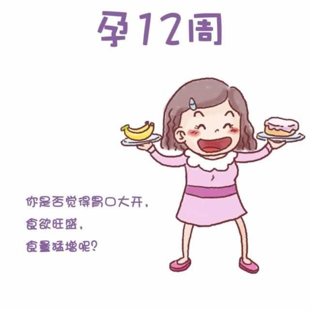

从本周开始，你步入了孕期的一个新阶段——孕中期。再过两周左右，你将彻底告恶心，迎来胃口大开，食欲旺盛的时期，但你对某些气味或味道的厌恶则可能持续整个孕期。
此时，你的腹部开始隆起，乳房正在迅速地增大。虽然距离分娩还有好几个月，但有些准妈妈已经开始分泌初乳了。如果需要，可以在文胸内加放乳垫，以免弄湿衣物。由于腹部和乳房的皮下弹力纤维断裂，暗红色的妊娠纹可能开始显现；有一些还会出现在臀部和腰部。
孕中期的到来，意味着流产的可能性降低了大约65%，同时怀孕初期的疲劳感渐渐消失。不要辜负了重新恢复的精力，从现在开始适当的健身吧！游泳、孕妇瑜伽、散步都是不错的选择，为即将到来的分娩，以及照看新生儿做好身体上的准备。